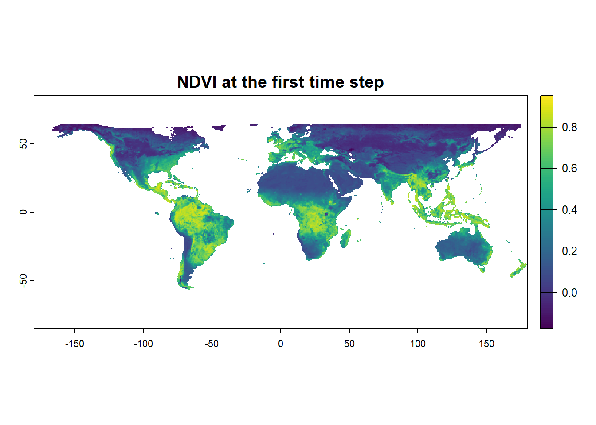
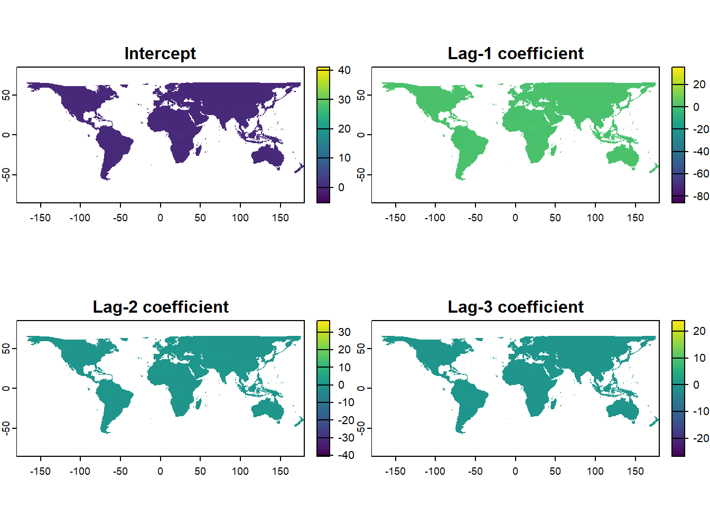

library(terra)We will use a time series of global gridded NDVI rasters to fit a separate linear regression model at every land pixel. By the end of this lesson, you should be able to:
- Read multiple raster files as a time-ordered
SpatRasterusing the terra package. - Understand how a raster stack represents a time series at each grid cell.
- Create lagged NDVI predictors.
- Fit a multiple linear regression model for one pixel.
- Apply the model independently to every raster cell with
terra::app(). - Handle non-land pixels and model failures using
NAvalues andtryCatch(). - Interpret and map the resulting regression coefficients.
Conceptual model
Let us consider a grid cell with NDVI observations through time:
\[ NDVI_1, NDVI_2, NDVI_3, \ldots, NDVI_T. \]
We model current NDVI as a function of its previous three layers:
\[ NDVI_t = \beta_0 + \beta_1 NDVI_{t-1} + \beta_2 NDVI_{t-2} + \beta_3 NDVI_{t-3} + \epsilon_t. \]
Here, \(\beta_0\) is the intercept; \(\beta_1\), \(\beta_2\), and \(\beta_3\) describe the relationships with NDVI one, two, and three layers earlier; and \(\epsilon_t\) represents unexplained variation. This is an autoregressive-style regression because NDVI values from previous layers are used to explain current NDVI. The model is implemented separately for every grid cell.
Important
A lag of one means one raster layer, not necessarily one day or one month. Its physical meaning depends on the temporal spacing of the input files.
Prepare the multilayer NDVI raster
We will use the terra package to import the raster layers, inspect the resulting SpatRaster, and apply a function across the time series of each grid cell.
First, locate the NDVI files and combine them into a multilayer raster.
ndvi_directory <- paste0(
"C:/Users/VSehgal/OneDrive - LSU AgCenter/LSU/02_Teaching/",
"LGAR_workshop/lgar/SampleData-master/raster_files/NDVI"
)
rasNames <- list.files(
path = ndvi_directory,
pattern = "\\.tif$",
full.names = T
)
# The regression requires the rasters to be in chronological order.
rasNames <- sort(rasNames)
ndviStack <- rast(rasNames)
ndviStackclass : SpatRaster
dimensions : 456, 964, 23 (nrow, ncol, nlyr)
resolution : 0.373444, 0.373444 (x, y)
extent : -180, 180, -85.24595, 85.0445 (xmin, xmax, ymin, ymax)
coord. ref. : lon/lat WGS 84 (EPSG:4326)
sources : NDVI_resamp_2016-01-01.tif
NDVI_resamp_2016-01-17.tif
NDVI_resamp_2016-02-02.tif
... and 20 more sources
names : NDVI_~01-01, NDVI_~01-17, NDVI_~02-02, NDVI_~02-18, NDVI_~03-05, NDVI_~03-21, ...
min values : -0.1760762, -0.2000000, -0.1939000, -0.1828998, -0.2000000, -0.175517, ...
max values : 0.9506500, 0.9190628, 0.9371761, 0.9294667, 0.9168695, 0.909500, ... list.files() searches the directory for files ending in .tif. Setting full.names = T returns the complete file paths required by rast(). The sort() function places filenames in alphanumeric order. This produces chronological order only when dates in the filenames use a sortable format, such as NDVI_2020_01.tif and NDVI_2020_02.tif. Inspect the filenames before fitting the model.
length(rasNames) # Number of time steps[1] 23head(basename(rasNames))[1] "NDVI_resamp_2016-01-01.tif" "NDVI_resamp_2016-01-17.tif"
[3] "NDVI_resamp_2016-02-02.tif" "NDVI_resamp_2016-02-18.tif"
[5] "NDVI_resamp_2016-03-05.tif" "NDVI_resamp_2016-03-21.tif"tail(basename(rasNames))[1] "NDVI_resamp_2016-09-29.tif" "NDVI_resamp_2016-10-15.tif"
[3] "NDVI_resamp_2016-10-31.tif" "NDVI_resamp_2016-11-16.tif"
[5] "NDVI_resamp_2016-12-02.tif" "NDVI_resamp_2016-12-18.tif"nlyr(ndviStack) # Number of raster layers[1] 23plot(ndviStack[[1]], main = "NDVI at the first time step")
For any grid cell, its values across all layers form an NDVI time series. Let us extract one example cell to see the type of data passed to the cellwise function.
# Choose a cell number known to be on land for the sample data.
example_cell <- 1000
x_example <- as.numeric(ndviStack[example_cell])
x_example [1] NA -3.4e+38 -3.4e+38 -3.4e+38 -3.4e+38 -3.4e+38 -3.4e+38 -3.4e+38
[9] -3.4e+38 -3.4e+38 -3.4e+38 -3.4e+38 -3.4e+38 -3.4e+38 -3.4e+38 -3.4e+38
[17] -3.4e+38 -3.4e+38 -3.4e+38 -3.4e+38 -3.4e+38 -3.4e+38 -3.4e+38When app() evaluates a cell, it passes a vector like x_example to the function. Non-land cells contain only NA values. Land cells may also contain occasional NA values because of clouds, missing observations, or quality screening.
Construct the lagged regression model
Let us first construct lagged predictors for a short example time series.
x <- c(0.20, 0.25, 0.31, 0.29, 0.35, 0.39)
x1 <- c(NA, x[-length(x)])
x2 <- c(NA, x1[-length(x1)])
x3 <- c(NA, x2[-length(x2)])
lagInput <- cbind(
current_NDVI = x,
lag_1 = x1,
lag_2 = x2,
lag_3 = x3
)
lagInput current_NDVI lag_1 lag_2 lag_3
[1,] 0.20 NA NA NA
[2,] 0.25 0.20 NA NA
[3,] 0.31 0.25 0.20 NA
[4,] 0.29 0.31 0.25 0.20
[5,] 0.35 0.29 0.31 0.25
[6,] 0.39 0.35 0.29 0.31The first row cannot have a one-layer lag, so lag_1 begins with NA. Similarly, lag_2 begins with two missing values and lag_3 begins with three. Therefore, the first three rows cannot be used to fit the regression.
We can now place these steps inside a function that receives the NDVI time series for one cell and returns the four model coefficients.
NDVI_pred_mod <- function(x) {
# Convert the cell values to a numeric vector.
x <- as.numeric(x)
tryCatch({
# Skip cells with no NDVI observations, such as non-land pixels.
if (!all(is.na(x))) {
# Construct one-, two-, and three-layer lagged predictors.
x1 <- c(NA, x[-length(x)])
x2 <- c(NA, x1[-length(x1)])
x3 <- c(NA, x2[-length(x2)])
# Column 1 is current NDVI; columns 2-4 are lagged NDVI.
lagInput <- cbind(x, x1, x2, x3)
# Fit current NDVI using the previous three layers.
regCoeff <- lm(lagInput[, 1] ~ lagInput[, 2:4])
# Extract the intercept and slope coefficients.
interc <- regCoeff$coefficients[1]
a1 <- regCoeff$coefficients[2]
a2 <- regCoeff$coefficients[3]
a3 <- regCoeff$coefficients[4]
return(c(interc, a1, a2, a3))
} else {
return(rep(NA, 4))
}
}, error = function(e) {
return(rep(NA, 4))
})
}The function must always return four values: the intercept and three lag coefficients. Non-land cells and failed models also return four values, but each value is NA. This keeps the output structure consistent across the raster.
tryCatch() prevents one problematic cell from stopping the entire operation. A model may fail because it has too few complete observations, no variation in valid NDVI values, or strong dependence among the lagged predictors.
Important
tryCatch() handles errors, but it can also hide their causes. While developing the function, test it on selected cells without tryCatch() so that you can examine any model errors.
Before applying the function globally, test it on a valid example and an all-NA cell.
set.seed(42)
test_series <- 0.5 + 0.2 * sin(seq(0, 4 * pi, length.out = 30)) +
rnorm(30, mean = 0, sd = 0.02)
NDVI_pred_mod(test_series) (Intercept) lagInput[, 2:4]x1 lagInput[, 2:4]x2 lagInput[, 2:4]x3
0.14780681 1.14293026 0.05334672 -0.49302383 NDVI_pred_mod(rep(NA, 30))[1] NA NA NA NAThe first call should return four coefficients. The second should return four NA values.
Apply and interpret the cellwise model
We will now run the function over the complete global raster. During rendering, app() passes the NDVI time series of every grid cell to NDVI_pred_mod() and creates four global coefficient layers.
coeffVal <- app(ndviStack, NDVI_pred_mod)
names(coeffVal) <- c(
"intercept",
"lag_1_coefficient",
"lag_2_coefficient",
"lag_3_coefficient"
)
coeffValclass : SpatRaster
dimensions : 456, 964, 4 (nrow, ncol, nlyr)
resolution : 0.373444, 0.373444 (x, y)
extent : -180, 180, -85.24595, 85.0445 (xmin, xmax, ymin, ymax)
coord. ref. : lon/lat WGS 84 (EPSG:4326)
source(s) : memory
names : intercept, lag_1_coefficient, lag_2_coefficient, lag_3_coefficient
min values : -5.353866, -86.06724, -40.68961, -34.68671
max values : 41.088533, 35.72367, 62.46070, 24.03736 # Confirm the four global coefficient layers.
print(coeffVal)class : SpatRaster
dimensions : 456, 964, 4 (nrow, ncol, nlyr)
resolution : 0.373444, 0.373444 (x, y)
extent : -180, 180, -85.24595, 85.0445 (xmin, xmax, ymin, ymax)
coord. ref. : lon/lat WGS 84 (EPSG:4326)
source(s) : memory
names : intercept, lag_1_coefficient, lag_2_coefficient, lag_3_coefficient
min values : -5.353866, -86.06724, -40.68961, -34.68671
max values : 41.088533, 35.72367, 62.46070, 24.03736 terra::app() gathers the values across all layers at one grid cell, supplies that vector to the function, and writes the four returned coefficients to four output raster layers. Because this code chunk is evaluated, the global coefficient rasters are created before the plotting chunk runs. The output retains the geometry of the input raster.
# Plot all four coefficient layers in the rendered output.
plot(
coeffVal,
main = c(
"Intercept",
"Lag-1 coefficient",
"Lag-2 coefficient",
"Lag-3 coefficient"
),
nc = 2
)
A positive lag coefficient indicates that, after accounting for the other lags, higher NDVI in an earlier layer is associated with higher current NDVI. A negative coefficient indicates an inverse partial relationship. Larger absolute coefficients represent stronger fitted relationships on the scale of the model. The intercept is the predicted NDVI when all three lagged NDVI values equal zero, although that condition may not be ecologically meaningful everywhere.
A coefficient map is not a prediction map. It shows how fitted model parameters vary spatially. For one time series, the next NDVI value can be estimated from the three most recent observations:
\[ \widehat{NDVI}_{T+1} = b_0 + b_1 NDVI_T + b_2 NDVI_{T-1} + b_3 NDVI_{T-2}. \]
coefs <- NDVI_pred_mod(test_series)
next_ndvi <- coefs[1] +
coefs[2] * test_series[length(test_series)] +
coefs[3] * test_series[length(test_series) - 1] +
coefs[4] * test_series[length(test_series) - 2]
next_ndvi(Intercept)
0.5733534 To create a full prediction raster, the same calculation would be applied cellwise using the coefficient rasters and the final three NDVI layers.
If needed, save the coefficient layers as a multilayer GeoTIFF.
writeRaster(
coeffVal,
filename = "NDVI_regression_coefficients.tif",
overwrite = TRUE
)Check your understanding
- Why do the first three rows of
lagInputcontain missing values? - What does a lag of one represent for this NDVI dataset?
- Why must the raster files be arranged chronologically?
- Why does the function return four values for a non-land pixel?
- What happens if a land pixel has too few complete lagged observations?
- Does a positive lag-1 coefficient prove that earlier NDVI causes current NDVI? Why or why not?
- How would you modify the model to use only two lags?
- How would you produce a raster of predicted NDVI for the next time step?
- Why might neighboring pixels have different coefficients?
- What diagnostics would you inspect before using the model for forecasting?
The key elements of this workflow are the temporal ordering of the raster layers, the construction of lagged predictors, consistent handling of missing values, and the use of terra::app() to repeat the same analysis independently at every grid cell.